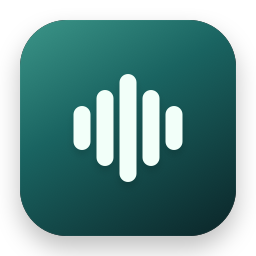

CrispVoice
Your voice. Your words.
Clear text where you work.
Three steps to start
- Open the DMG. Drag CrispVoice to Applications.
- Open the app. Setup guides you through permissions and your shortcut.
- Put the cursor in an input. Press your shortcut and speak.
Local English (US) speech needs a supported Mac with macOS 26 or later. Text cleanup can run locally through Apple, Ollama, or a model downloaded inside CrispVoice. Apple cleanup needs Apple Intelligence. Built-in model downloads need Apple silicon. Cloud processing uses your own key and can add charges.